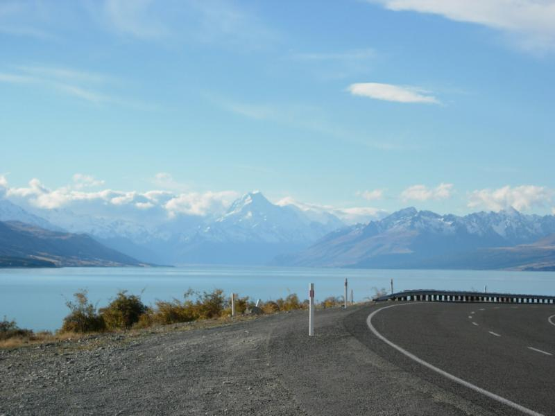

Timaru is a port and industrial city on the East coast a couple of hours below Christchurch. I stayed there to break up the long drive from Queenstown.
Stayed on the bay. The bay was nice. The motel was substandard-gritty and industrial like the town. Aired it out for a couple of hours before going to bed.
This is downtown Timaru. Don't eat there. There was hardly anything open--it was an off-season Monday night. Chose an Indian restaraunt--you can't wreck Indian, right? There was an intriguing dish with a writeup that Indian has sweet-and-sour dishes as well, they're flavored with lime juice and honey. Ordered the chicken. Here's the recipe in case you want to try it at home. Deep fry a few tiny chicken chunks until they're hard and flaky. Pour in the sludge from the bottom of a Sphagetti-Os can. Add water until tasteless and serve.
Here's the odd thing: the town had good vibes. Felt like Pasadena or Menlo Park. While driving around looking for the motel, found there is a college in town. Evidently it's vibes dominate, since the whole place has the feel of being near Caltech or Stanford, evidently.
Aoraki
I passed Aoraki (Mt. Cook) on the way from Twizel to Timaru. Would have stayed there instead of Timaru had I been able to get a room (there's only one lodge there, The Hermitage). Instead, I stopped at the roadside and took this picture.
